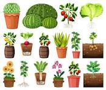

Plantas
Las plantas son mucho más que un adorno natural; son esenciales para la vida en la Tierra. A través de la fotosíntesis, producen oxígeno y absorben dióxido de carbono, regulando la atmósfera y manteniendo el equilibrio ecológico. Además, purifican el aire, estabilizan los suelos y proporcionan alimentos, medicinas y materiales esenciales para los seres humanos y los animales. Su presencia también influye en nuestro bienestar emocional, reduciendo el estrés y mejorando la concentración. En definitiva, las plantas son aliadas imprescindibles para la salud del planeta y de quienes lo habitamos, y su conservación y cuidado son fundamentales para garantizar un futuro sostenible.
